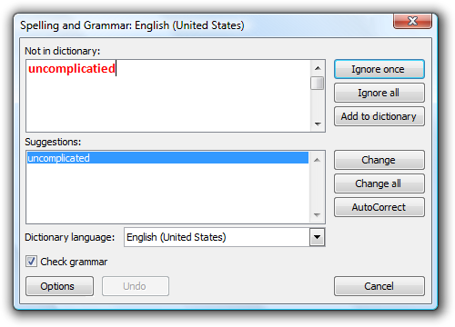
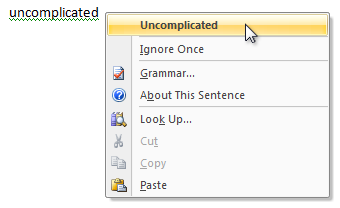

[!NOTE] This design guide was created for Windows 7 and has not been updated for newer versions of Windows. Much of the guidance still applies in principle, but the presentation and examples do not reflect our current design guidance.
A great desktop application is powerful and, at the same time, simple. Through carefully balanced feature selection and presentation, you can achieve both power and simplicity.
Powerful:

Powerful and simple:

The ideal Windows-based application is both powerful and simple. Of course you want your application to be powerful and of course you want it to be simple, but can you achieve both? There is a natural tension between these goals, but that tension is far from irreconcilable. You can achieve both power and simplicity through carefully balanced feature selection and presentation.
What does "power" really mean in terms of software? An application might be considered powerful if it is jam-packed full of features, having a tremendous breadth of functionality in an attempt to be all things to all users. Such a design is not likely to be successful because an untargeted feature set is unlikely to satisfy the needs of anyone. This is not the type of power that we are after.
An application is powerful when it has the right combination of these characteristics:
Some of these characteristics depend upon the perception of the user and are relative to users' current capabilities. What is considered powerful may change over time, so today's advanced search feature might be commonplace tomorrow.
All these characteristics can be combined into our definition of power:
An application is powerful when it enables its target users to realize their full potential efficiently.
Thus, the ultimate measure of power is productivity, not the number of features.
Different users need help in achieving their full potential in different ways. What is enabling to some users might harm versatility, directness, and control for others. Well-designed software must balance these characteristics appropriately. For example, a desktop publishing system designed for nonprofessionals might use wizards to walk users through complex tasks. Such wizards enable the target users to perform tasks that they otherwise wouldn't be able to perform. By contrast, a desktop publishing system for professionals might focus on directness, efficiency, and complete control. For users of such an application, wizards may be limiting and frustrating.
If you do only one thing...
Understand your target users' goals and craft a feature set that enables them to achieve those goals productively.
We define simplicity as follows:
Simplicity is the reduction or elimination of an attribute of a design that target users are aware of and consider unessential.
In practice, simplicity is achieved by selecting the right feature set and presenting the features in the right way. This reduces the unessential, both real and perceived.
Simplicity is dependent upon the perception of users. Consider how the effect of an automatic transmission depends on a user's perspective:
While different users regard the automatic transmission differently, it's successful because it eliminates the need for unessential knowledge, skill, and effort from its target users. For the typical driver, automatic transmission is a great feature because it just works.
Simplicity, when correctly applied, results in ease of use. But simplicity and ease of use are not the same concepts. Ease of use is achieved when users can perform a task successfully on their own without difficulty or confusion within a suitable amount of time. There are many ways to achieve ease of use, and simplicity—the reduction of the unessential—is just one of them.
All users, no matter how sophisticated, want to get their work done with a minimum amount of unnecessary effort. All users—even advanced users—are primarily motivated to get their work done, not to learn about computers or your application.
Simplicity is the most effective way to achieve ease of use, and ease of use equals use. Complex, hard-to-use features just don't get used. By contrast, simple, elegant designs that perform their function well are a joy to use. They invoke a positive, emotional response.
For example, consider the wireless networking support in Microsoft Windows XP. Microsoft could have added a wizard to walk users through the configuration process. This approach would have resulted in ease of use but not simplicity, because an unessential feature (the wizard) would have been added. Instead, Microsoft designed wireless networking to configure itself automatically. Users ultimately don't care about the configuration details, so long as it "just works" reliably and securely. This combination of power and simplicity in wireless networking technology has led to its popularity and rapid adoption.
If you do only one thing...
Start your design process with the simplest designs that do the job well.
If you're not satisfied with your current design, start by stripping away all the unessential elements. You will find that what remains is usually quite good.
To obtain simplicity, always design for the probable, not the possible.
The possible
Design decisions based on what's possible lead to complex user interfaces like the Registry Editor, where the design assumes that all actions are equally possible and as a result require equal effort. Because anything is possible, user goals aren't considered in design decisions.
The probable
Design decisions based on the probable lead to simplified, goal- and task-based solutions, where the likely scenarios receive focus and require minimal effort to perform.
The simplicity design principle
To obtain simplicity, focus on what is likely; reduce, hide, or remove what is unlikely; and eliminate what is impossible.
What users will do is far more relevant to design than what they might do.
To obtain simplicity while maintaining power, choose the right set of features, locate the features in the right places, and reduce the effort to use them. This section gives some common techniques to achieve these goals.
Choosing the right feature set
"Perfection is achieved, not when there is nothing more to add,
but when there is nothing left to take away." —Antoine de Saint-Exupery
The following design techniques give your users the features they need while achieving simplicity through actual reduction or removal:
Streamlining the presentation
"The ability to simplify means to eliminate the unnecessary
so that the necessary may speak." —Hans Hofmann
Use the following design techniques to preserve power, while achieving simplicity through the perception of reduction or removal:
Reducing effort
"Simple things should be simple.
Complex things should be possible."—Alan Kay
The following design techniques result in reduced effort for users:
"Everything should be made as simple as possible,
but not simpler."—Albert Einstein
We believe that simplicity is crucial to an effective, desirable user experience—but it is always possible to take a good thing too far. The essence of simplicity is the reduction or elimination of the unessential. Removal of the essential just produces a poor design. If your "simplification" results in users becoming frustrated, confused, unconfident, or unable to complete tasks successfully, you have removed too much.
"I have only made this letter longer because I have
not the time to make it shorter."—Blaise Pascal
Obtaining simplicity while preserving power often requires significant internal complexity. It is usually easier to design software that exposes all the technology plumbing than to design one that hides it—the latter requires an excellent understanding of your target users and their goals. Removing a feature requires discipline, as does deciding against adding that cool feature that really isn't practical. Simplicity requires making hard design choices instead of making everything configurable. Complex software often results from a misconception about users: that they value unused features or overly complex features they can't understand.
Power is all about enabling your users and making them productive. Simplicity is all about removing the unessential and presenting features the right way. By understanding your target users and achieving the right balance of features and presentation, you can design Windows-based applications that do both.
Â
Â